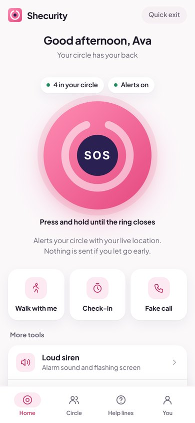
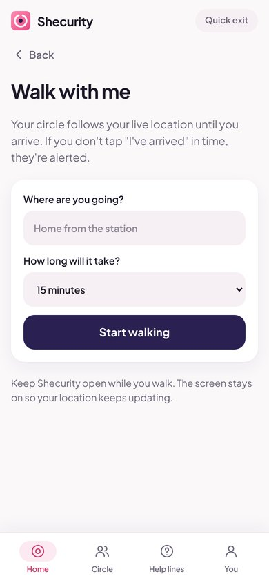

Your little helper for the moments that feel wrong
The walk home where you hold your keys a bit tighter. The date that isn't going well. The taxi that takes a strange turn. Shecurity is the free safety app that has your back in seconds.
- Free forever
- No ads, data never sold
- Only people you invite

For the moments you know too well
You've probably been there. Next time, you won't be on your own.
Walking home late
Share your walk so someone follows you home. If you don't arrive, they know where you were.
Walk me homeA date that feels off
Your phone rings, a warm voice says you need to come home, and you have the perfect way out.
Fake callSomeone is following you
Press and hold. Your people get your live location instantly, and you see who's coming.
SOSA taxi or rideshare alone
Save the car and driver and send them to your people before you even get in.
Ride checkMeeting someone new
Set a check-in. If you don't tap “I'm okay” in time, your people are alerted automatically.
Check-in timerYou need attention, now
One tap for a loud alarm and a flashing screen that makes people look.
SirenEverything you need when it counts
Simple tools that work in seconds, even when your hands are shaking. All free, always.
SOS with live location
Press and hold. Your people get an alert with your live location and can tell you they're on the way.
Your own safe circle
Invite friends and family with a link. Only they can see you, and only when you choose.
Walk me home
Your circle follows along until you're home. If you don't arrive in time, they're alerted.
Check-in timer
Going somewhere uncertain? If you don't check in, your circle knows where you were.
Share your plans
Where you're going and who you're with, like a story your circle sees for a few hours.
Fake call that talks back
Your phone rings and a natural voice answers what you say, so you have a polite way out.
Loud siren
One tap for a loud alarm and a flashing screen to draw attention.
Widget and watch
Your four most important buttons on your home screen and your wrist.
Ready in two minutes
Set it up once, and it's there whenever you need it.


Shaped by women's real moments
Every feature started with a real situation. Many women shared the walks, dates and rides that went wrong, in conversations and surveys, and their stories became the tools. Shecurity is the friend in your pocket they wished they'd had. And a friend doesn't charge you or sell your secrets.
Free forever
Every safety feature stays free. No paywall in an emergency, no ads in your way.
Private by design
No public map and no strangers. Your data is never sold, and you can delete it any time.
Only your people
Only the friends and family you invite can see you, and only when you choose.
Support future upgrades
Shecurity is free and will stay free. If it helps you or someone you love, you can give any amount to help us build what's next. It's completely optional.
- Keeping the safety network running
- The iPhone app and more languages
- New tools you ask for
Give any amount
You choose the amount on a secure Stripe page. Pay by card, Apple Pay, Google Pay, iDEAL, Bancontact or PayPal.
Donate to ShecurityThank you for helping keep the world a safer place.
Questions
What is Shecurity?
Shecurity is a free women's safety app: your little helper when something feels wrong. It has an SOS with live location, a fake call that talks back, walk me home, check-ins and a siren, and it shares only with the friends and family you invite.
Is Shecurity really free?
Yes. Every safety feature is free forever, with no ads and no trial. Shecurity is profit-free: nobody earns money from it. You can donate to support future upgrades, but you never have to.
Who can see my location?
Only the people in your circle, and only while you choose to share it: during an SOS, a walk or a missed check-in. There is no public map and no strangers. Your location is never sold.
Is it only for women?
Shecurity is designed for women and girls, shaped by their real stories and surveys, but anyone can use it, and anyone can be in your circle: friends, partners, parents, brothers, flatmates.
Does Shecurity work on iPhone and Android?
Yes. Get it on Google Play for Android. On iPhone the App Store version is on its way; until then it works in Safari from the home screen. There are home-screen widgets and Apple Watch and Wear OS apps too.
Does Shecurity call the police?
No. It alerts the people you trust, with your live location, and shows your local emergency number with one tap. In immediate danger, always call 911, 112, 999 or 000 first.
How do I contact you?
Email hello@getshecurity.com. A real person reads every message.
Be ready before you need it
It takes two minutes to set up, and it's free forever. The best time to get it is before the night you wish you had it.
Get Shecurity